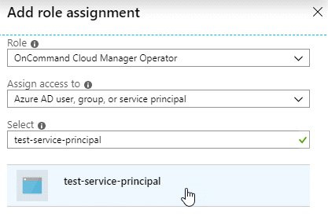

Azure アカウントを設定して Cloud Manager に追加
Cloud Volumes ONTAP を別々の Azure アカウントに導入する場合は、それらのアカウントに必要な権限を指定し、アカウントに関する詳細を Cloud Manager に追加する必要があります。

|
Cloud Central から Cloud Manager を導入すると、 Cloud Manager を導入した Azure アカウントが Cloud Manager によって自動的に追加されます。初期アカウントは、既存のシステムに Cloud Manager ソフトウェアを手動でインストールした場合は追加されません。 "Azure のアカウントと権限について説明します"。 |
サービスプリンシパルを使用した Azure 権限の付与
Cloud Manager には、 Azure でアクションを実行するための権限が必要です。Azure アカウントに必要な権限を付与するには、 Azure Active Directory でサービスプリンシパルを作成して設定し、 Cloud Manager で必要な Azure クレデンシャルを取得します。
次の図は、 Cloud Manager が Azure で操作を実行するための権限を取得する方法を示しています。1 つ以上の Azure サブスクリプションに関連付けられたサービスプリンシパルオブジェクトは、 Azure Active Directory の Cloud Manager を表し、必要な権限を許可するカスタムロールに割り当てられます。

Azure Active Directory アプリケーションの作成
Cloud Manager でロールベースアクセス制御に使用できる Azure Active Directory （ AD ）アプリケーションとサービスプリンシパルを作成します。
Azure で Active Directory アプリケーションを作成してロールに割り当てるための適切な権限が必要です。詳細については、を参照してください "Microsoft Azure のドキュメント：「 Required permissions"。
-
Azure ポータルで、 * Azure Active Directory * サービスを開きます。

-
メニューで、 * アプリ登録 * をクリックします。
-
[ 新規登録 ] をクリックします。
-
アプリケーションの詳細を指定します。
-
* 名前 * ：アプリケーションの名前を入力します。
-
* アカウントタイプ * ：アカウントタイプを選択します（ Cloud Manager で使用できます）。
-
* リダイレクト URI :[*Web] を選択し、任意の URL を入力します。たとえば、 https://url と入力します
-
-
[*Register] をクリックします。
AD アプリケーションとサービスプリンシパルを作成しておきます。
アプリケーションをロールに割り当てます
Azure で Cloud Manager に権限を付与するには、サービスプリンシパルを 1 つ以上の Azure サブスクリプションにバインドし、カスタムの「 OnCommand Cloud Manager Operator 」ロールを割り当てる必要があります。
-
カスタムロールを作成します。
-
をダウンロードします "Cloud Manager Azure ポリシー"。
-
割り当て可能なスコープに Azure サブスクリプション ID を追加して、 JSON ファイルを変更します。
ユーザが Cloud Volumes ONTAP システムを作成する Azure サブスクリプションごとに ID を追加する必要があります。
-
例 *
"AssignableScopes": [ "/subscriptions/d333af45-0d07-4154-943d-c25fbzzzzzzz", "/subscriptions/54b91999-b3e6-4599-908e-416e0zzzzzzz", "/subscriptions/398e471c-3b42-4ae7-9b59-ce5bbzzzzzzz" -
-
JSON ファイルを使用して、 Azure でカスタムロールを作成します。
次の例は、 Azure CLI 2.0 を使用してカスタムロールを作成する方法を示しています。
-
AZ 役割定義 create — 役割定義 C ： \Policy_For _Cloud_Manager_Azure_3.7.4.json *
-
OnCommand Cloud Manager Operator _ という名前のカスタムロールが作成されます。
-
-
ロールにアプリケーションを割り当てます。
-
Azure ポータルで、 * Subscriptions * サービスを開きます。
-
サブスクリプションを選択します。
-
[* アクセス制御 (IAM)] 、 [ 追加 ] 、 [ 役割の割り当ての追加 *] の順にクリックします。
-
OnCommand Cloud Manager Operator * ロールを選択します。
-
Azure AD のユーザ、グループ、サービスプリンシパル * は選択したままにします。
-
アプリケーションの名前を検索します（リストをスクロールして探すことはできません）。

-
アプリケーションを選択し、 * 保存 * をクリックします。
Cloud Manager のサービスプリンシパルに、そのサブスクリプションに必要な Azure の権限が付与されるようになりました。
Cloud Volumes ONTAP を複数の Azure サブスクリプションから導入する場合は、サービスプリンシパルを各サブスクリプションにバインドする必要があります。Cloud Manager では、 Cloud Volumes ONTAP の導入時に使用するサブスクリプションを選択できます。
-
Windows Azure Service Management API 権限を追加しています
サービスプリンシパルに「 Windows Azure Service Management API 」の権限が必要です。
-
Azure Active Directory * サービスで、 * アプリ登録 * をクリックしてアプリケーションを選択します。
-
[API アクセス許可 ] 、 [ アクセス許可の追加 ] の順にクリックします。
-
Microsoft API* で、 * Azure Service Management * を選択します。

-
[* 組織ユーザーとして Azure サービス管理にアクセスする *] をクリックし、 [ * 権限の追加 * ] をクリックします。

アプリケーション ID とディレクトリ ID を取得しています
Cloud Manager に Azure アカウントを追加するときは、アプリケーション（クライアント）の ID とディレクトリ（テナント） ID を指定する必要があります。Cloud Manager は、この ID を使用してプログラムによってサインインします。
-
Azure Active Directory * サービスで、 * アプリ登録 * をクリックしてアプリケーションを選択します。
-
アプリケーション（クライアント） ID * とディレクトリ（テナント） ID * をコピーします。

クライアントシークレットの作成
Cloud Manager がクライアントシークレットを使用して Azure AD で認証できるようにするには、クライアントシークレットを作成し、そのシークレットの値を Cloud Manager に指定する必要があります。
|
|
Cloud Manager にアカウントを追加すると、 Cloud Manager はクライアントシークレットをアプリケーションキーとして参照します。 |
-
Azure Active Directory * サービスを開きます。
-
[* アプリ登録 * ] をクリックして、アプリケーションを選択します。
-
［ * 証明書とシークレット > 新しいクライアントシークレット * ］ をクリックします。
-
シークレットと期間の説明を入力します。
-
[ 追加（ Add ） ] をクリックします。
-
クライアントシークレットの値をコピーします。

これでサービスプリンシパルが設定され、アプリケーション（クライアント） ID 、ディレクトリ（テナント） ID 、およびクライアントシークレットの値をコピーしました。この情報は、 Cloud Manager で Azure アカウントを追加するときに入力する必要があります。
Cloud Manager への Azure アカウントの追加
必要な権限を持つ Azure アカウントを指定したら、そのアカウントを Cloud Manager に追加できます。これにより、そのアカウントで Cloud Volumes ONTAP システムを起動できます。
-
Cloud Manager コンソールの右上にある設定アイコンをクリックし、 * クラウドプロバイダとサポートアカウント * を選択します。

-
[ 新規アカウントの追加 ] をクリックし、 [Microsoft Azure] を選択します。
-
必要な権限を付与する Azure Active Directory サービスプリンシパルに関する情報を入力します。
-
アプリケーション ID ：を参照してください [Getting the application ID and directory ID]。
-
テナント ID （またはディレクトリ ID ）：を参照してください [Getting the application ID and directory ID]。
-
Application Key （クライアントシークレット）：を参照してください [Creating a client secret]。
-
-
ポリシーの要件が満たされていることを確認し、 * アカウントの作成 * をクリックします。
新しい作業環境を作成するときに、 [ 詳細と資格情報 ] ページから別のアカウントに切り替えることができるようになりました。
 ページで [ アカウントの切り替え ] をクリックした後に、クラウドプロバイダアカウントを選択する方法を示すスクリーンショット。"]
ページで [ アカウントの切り替え ] をクリックした後に、クラウドプロバイダアカウントを選択する方法を示すスクリーンショット。"]
追加の Azure サブスクリプションを管理対象 ID に関連付ける
Cloud Manager では、 Cloud Volumes ONTAP を導入する Azure アカウントとサブスクリプションを選択できます。管理対象に別の Azure サブスクリプションを選択することはできません を関連付けない限り、アイデンティティプロファイルを作成します "管理された ID" それらの登録と。
管理対象 ID はです "最初の Azure アカウント" NetApp Cloud Central から Cloud Manager を導入する場合。Cloud Manager を導入すると、 Cloud Central は OnCommand Cloud Manager オペレータロールを作成し、 Cloud Manager 仮想マシンに割り当てました。
-
Azure ポータルにログインします。
-
[ サブスクリプション ] サービスを開き、 Cloud Volumes ONTAP システムを展開するサブスクリプションを選択します。
-
「 * アクセスコントロール（ IAM ） * 」をクリックします。
-
[ * 追加 > 役割の割り当ての追加 * ] をクリックして、権限を追加します。
-
OnCommand Cloud Manager Operator * ロールを選択します。
OnCommand Cloud Manager Operator は、で指定されたデフォルトの名前です "Cloud Manager ポリシー"。ロールに別の名前を選択した場合は、代わりにその名前を選択します。 -
仮想マシン * へのアクセスを割り当てます。
-
Cloud Manager 仮想マシンが作成されたサブスクリプションを選択します。
-
Cloud Manager 仮想マシンを選択します。
-
[ 保存（ Save ） ] をクリックします。
-
-
-
追加のサブスクリプションについても、この手順を繰り返します。
新しい作業環境を作成するときに、管理対象 ID プロファイルに対して複数の Azure サブスクリプションから選択できるようになりました。

 このページを編集する
このページを編集する